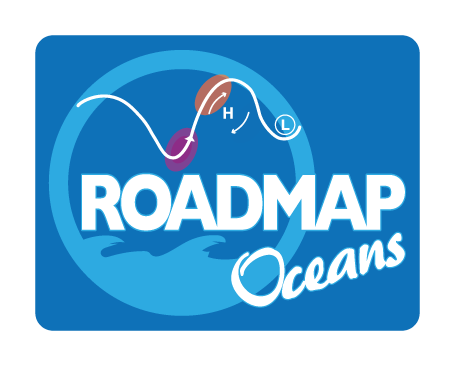
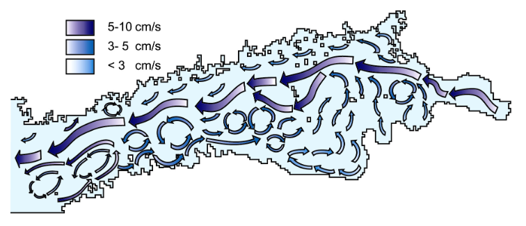

Joakim Kjellsson
Researcher and scientific programmer
| Publications | Students | Projects | About |
About
History
| 2009-2014 | PhD student | Stockholm University, Sweden |
| 2014-2016 | Postdoc | British Antarctic Survey, UK |
| 2016-2017 | Postdoc | University of Oxford, UK |
| 2017-2019 | Postdoc | GEOMAR, Germany |
| 2019-2024 | Jr. Professor for Meteorology | GEOMAR & Kiel University, Germany |
| 2024- | Researcher & Scientific programmer | SMHI, Sweden |
Projects
ESiWACE
Towards exascale weather and climate simulations. My role is in the transfer and establishment of knowledge for efficient and scalable climate simulations across Europe. Built a containerised version of the EC-Earth4 model which can be built on one computing system and easily ported to multiple high-performance computers across Europe - notable EuroHPCs such as MareNostrum5 and LUMI. The project is part of the EU Joint Undertaking (EuroHPC JU) aiming to develop a world-class supercomputing ecosystem in Europe. Link to project website
OptimESM
Developing the next generation of Earth System Models - with more process realism and higher resolution. My role is in the development of a new version of the EC-Earth model and explore hybrid-resolution approaches to increase model resolution and computer efficiency. Work includes upgrading the atmosphere component in EC-Earth with more realistic processes and to explore the use of a dual-grid configuration for atmosphere/chemistry simulations. Link to project website
SO-CHIC
Understand and quantify variability of heat and carbon budgets in the Southern Ocean. Investigate key processes controlling exchanges between the atmosphere, ocean and sea ice from observations and climate models. My role was to study the climate effect of polynyas in the Weddell Sea, using idealised simulations with an atmosphere model and with a fully coupled climate model with refined resolution in the Weddell Sea. Link to project website
ROADMAP
The role of ocean dynamics and ocean-atmosphere interactions in driving climate variations. My role was to study how ocean variability can shape atmospheric extreme events over Europe, for example how the North Atlantic Ocean shapes European summer heat waves. Link to project website
BalticWay
The potential of currents for environmental management of the Baltic Sea maritime industry. My role was to study the spreading rates of particles in the Baltic Sea using a combination of turbulence theory, observed surface drifters, and particle-tracking models. Link to project report
Students
Postdocs
-
Abhishek Savita, 2021 - 2024, Oceanic influence on atmospheric circulation
-
Malin Ödalen, 2023 - 2024, Southern Ocean heat and carbon uptake
-
Sayantani Ojha, 2022 - 2025, Impact of Greenland melting on atmospheric extremes
-
Julian Krüger, 2024 - 2024, Representation of European heat waves in climate models
PhD students
-
Julian Krüger, 2020 - 2023, On the Role of North Atlantic Sea Surface Temperatures for European Heat Events. Successful defence: December 2023
-
Sedat Gözlet, 2021 - 2025, Atmospheric Extreme Events in Future Climates. Planned defence: early 2025.
-
Médéric StPierre, 2021 - 2024, Climate-projection uncertainties in grand model ensemble [co-supervisor]. Successful defence: October 2024.
-
Yingxue Liu, 2022 - (2026), Extreme weather events in present and future climates.
-
Qi Zhang, 2022 - (2026), Analyzing extreme temperature under global warming: Trends, Models, and Mechanisms
Master theses
-
Tim Sieker, 2024, Evaluating the mean climate in eddy-parameterized and eddy-rich versions of the FOCI-OpenIFS coupled climate model
-
Nils Niebaum, 2024, Constraining Rain Evaporation during the EUREC4A Campaign with the Super-Droplet Model CLEO, [co-supervisor]
-
Catharina Ziska, 2024, TBD [co-supervisor]
-
Tabea Rahm, 2023, How will the dominant weather regimes change under the influence of climate warming?
-
Lukas Schreiber, 2023, What Drives the Salinity in the Global Ocean under Changing Climate Forcing?, [co-supervisor]
-
Sebastian Bubmann, 2023, Is statistical downscaling of seasonal precipitation forecasts worth the effort?
-
Nicolas Dettling, 2021, Response of atmospheric heat and moisture transports to anthropogenic climate forcing
Bachelor theses
-
Annabelle d’Heureuse, Southern Hemispheric Sudden Stratospheric Warmings in an Ensemble of the FOCI Coupled Climate Model [co-supervisor]
-
Edgar Borkowski, 2024, Atmosphere-model-driven uncertainty in North Atlantic climate response to CO2 forcing [co-supervisor]
-
Sarah Thomae, 2024, Local weather variability in Longyearbyen and surroundings, Svalbard, [co-supervisor]
-
Finn Könecke, 2024, What is the fingerprint of AMOC variability and its trends?
-
Stefanie Brechtelsbauer, 2023, Extreme Greenland Ice Sheet melt events in a warmer world: A storyline approach, [co-supervisor]
-
Katharina Schmitt, 2023, Convective and Gravity Wave Momentum Transport during EUREC4A, [co-supervisor]
-
Thies Johnsen, 2023, Impact of Ocean Model Resolution on the Representation of North Atlantic and European Blocking in the FOCI-OpenIFS Model, [co-supervisor]
-
Lasse Kummer, 2023, Representation of double-gyre circulations in ocean models of varying horizontal resolutions, Winner of Otto Krümmel award for best B.Sc. thesis.
-
Paula Damke, 2022, Effect of Seasonal Sea Ice on Southern Ocean Mesoscale Eddy Activity in a Climate Model, [co-supervisor]
-
Julia Noack, 2022, How do mesoscale ocean dynamics affect Antarctic Circumpolar Current strength in climate models?, [co-supervisor]
-
Nana Hocke, 2022, Representation of jet stream trends in atmospheric models
-
Leah Kanzler, 2022, How do atmosphere models reproduce observed extreme precipitation events?
-
Daniel Kaufmann, 2022, Veränderung des Schneefalls über Europa in Klimamodellsimulationen
-
Sebastian Bubmann, 2021, Rainfall patterns in Port Moresby, Papua New Guinea
-
Alexander Schmitz, 2021, Veränderung der Niederschlagsverteilung über Europa in CMIP6 Modellen [co-supervisor]
-
Corinna Buder, 2020, Impact of a Northern European Enclosure Dam on North Atlantic Climate
-
Johanna Knauf, 2020, Impact of ocean resolution on storms in the North Atlantic region
-
Nils Niebaum, 2020, Trends in heat Stress over Europe
-
Lisa Kaspar, 2020, Einfluss von ENSO auf die Variabilität im Südlichen Ozean [co-supervisor]
-
Jakob Deutloff, 2020, Drivers of Climate-Model Biases in Antarctic Circumpolar Current Strength
-
Berenike Rappat, 2019, Klimatvariabilität im Südlichen Ozean aus Beobachtungen